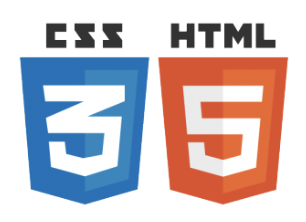
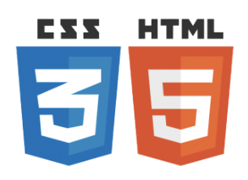

Compétence :
Programmation :
- Python (4 ans d'expérience) :
- Différents projets de simulations numériques :
- Simulations d'orbites du systèmes solaires
- Simulations en Physique statistique
- Réalisation d'un arbre de décision en Machine Learning
- Langage utilisé lors de mes stages de M1 et M2 :
- Triangulation d'un signal de neutrinos provenant d'une supernova à
effondrement de coeur (CCSN)- Séparation de composantes astrophysique pour l'expérience QUBIC
- MatLab (1 an)
- HTML et CSS (quelques mois)
- C (quelques semaines)
Bureautique :
- Pack office (word, excel, ...)
- LateX
 
